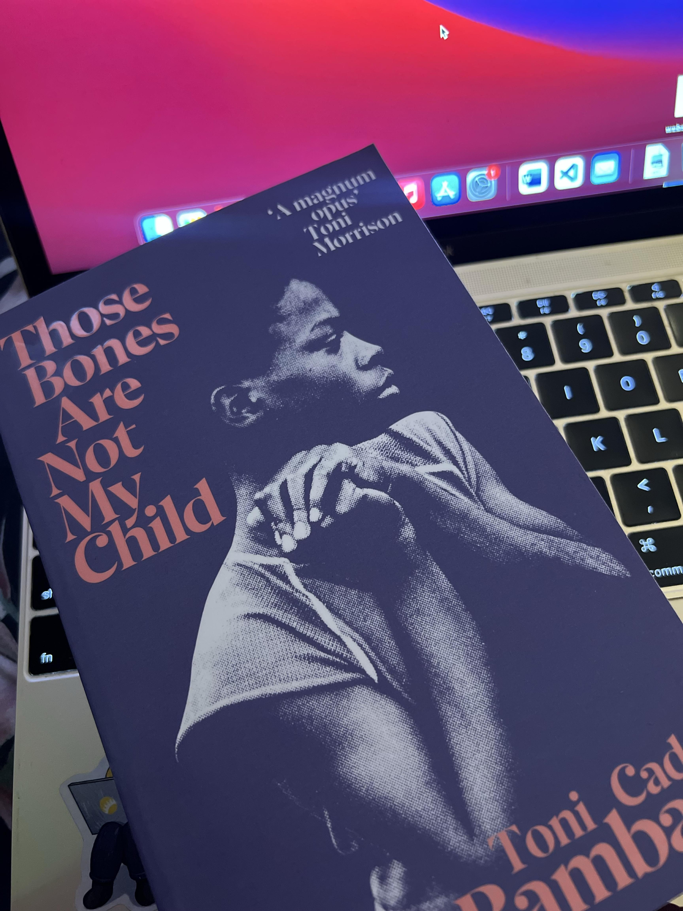
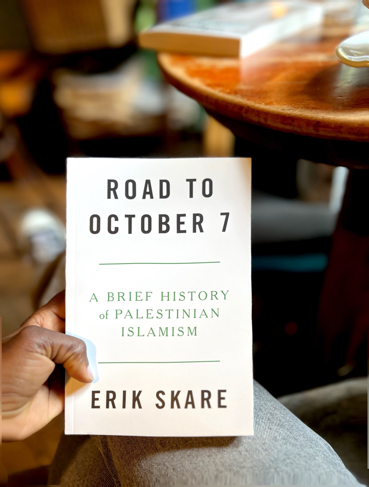

This is Aliyah, and this site is a part of my learning journey as a DevOps newbie. So while it's basic for now, I'm using it to experiment with things like cloud hosting, version control, and infrastructure as code. Think of it as a bookshelf plus lab. Thanks for stopping by.
Those Bones Are Not My Child is a powerful novel by Toni Cade Bambara that explores the Atlanta Child Murders through the lens of a Black mother’s harrowing search for her missing son. The story delves into systemic racism, grief, and resilience in the face of bureaucratic indifference and institutional failure. It's an epic, deeply investigative narrative grounded in community, maternal strength, and historical memory.
Road to October 7 is a documentation of the historical and cultural buildup to the events of October 7, told through the perspective of the Beam Troop — a Palestinian cultural collective. The book explores resistance, displacement, collective memory, and the deep-rooted impact of colonial violence. It provides context to a modern political reality through art, testimony, and radical historical framing.
